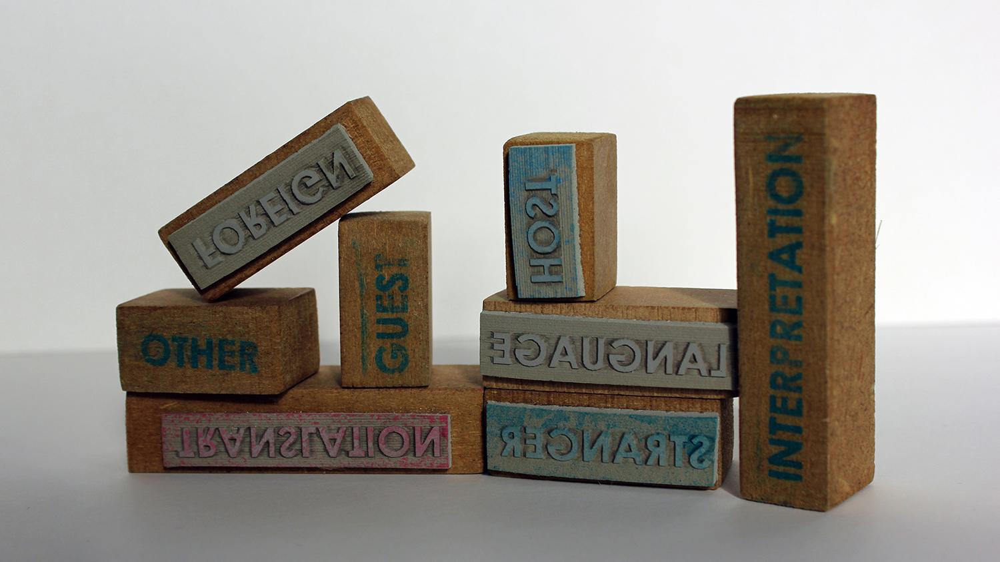
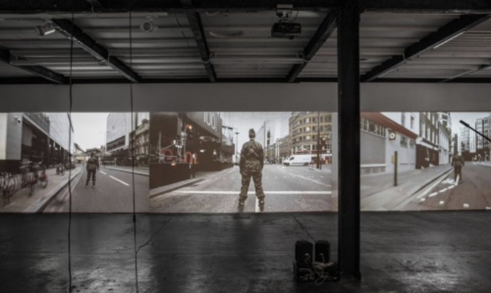
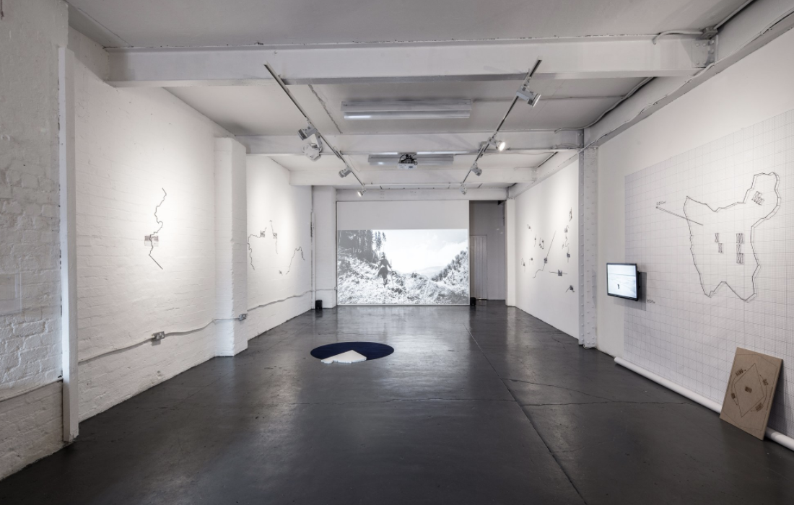
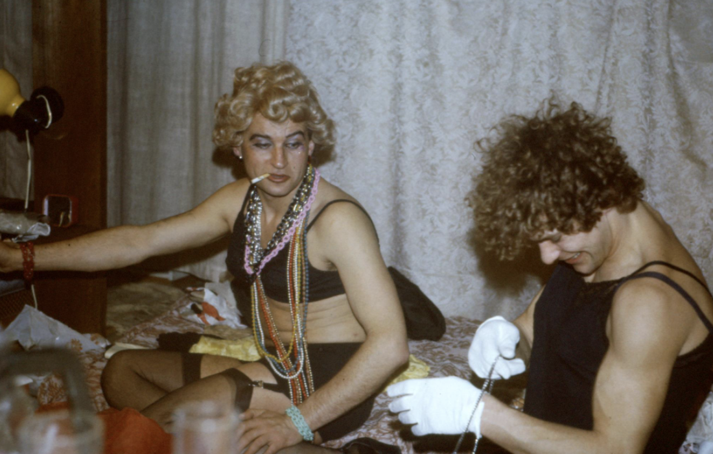

| LIST OF COURSES | ||
|---|---|---|
| NAME OF THE COURSE | START DATE | INFORMATION |
PYTHON & APPS
|
THURS 12 AUG - THURS 31 SEPT 6.00PM - 8.00PM (8-WEEKS) |
A beginner-friendly course to help students learn the fundamentals of programming through problem-solving in Python and how this can be applied to things like apps. |
WEB DEV
|
THURS 23 SEPT - THURS 11 NOV 6.30PM - 8.30PM (8-WEEKS) |
You will learn the fundamental skills of front-end development, including
three sessions on JavaScript. At the end of the course, you will build a website from scratch. |
| DATA & SQL |
WEDS 22 SEPT - WEDS 10 NOV 6.30PM - 8.30PM (8-WEEKS) |
SQL is one of the most sought-after skills by hiring employers in the tech world. Learn the key elements of database design, SQL, and working more data, faster. |
LIST OF PROJECTS
- Translation Zone(s)

Translation Zone(s) is a collaborative work by artist/researcher Heather Connelly and artist/curator Karina Cabanikova and has been designed to immerse and engage people in process of translation and explore the condition of Linguistic Hospitality. Philosopher Paul Ricoeur (2008:10), described Linguistic Hospitality as 'where the pleasure of dwelling in the other's language is balanced by the pleasure of receiving the foreign word at home, in one's welcoming house'. With this in mind the game requires you to decode, process, map and translate unfamiliar sounds of a minor language (Slovak) into a shared, major language (English). You are invited to listen closely, to the texture of the words, to tune into the unfamiliar and inhabit the role of host and guest simultaneously. You need to beware of 'false friends' - those words that sound familiar but are used in an entirely different way.
- Digital Diaspora

The Digital Diaspora is an exhibition organised in collaboration with Short Circuit and Studio 44.Based on the topics of unity and division this timely project lays particular emphasis on Europe as its arrival marks 30 years of the fall of the Berlin Wall and the subsequent overthrow of Communist rule. Providing an opportunity to reflect on the collapse of the Soviet Union and the opening up of Eastern Europe, the exhibition also contrastingly takes place during the British Exit from the European Union. Through performative action, immersive and interactive measures, artists’ work directly responds to the current socio-political climate of the continent addressing key issues of migration, borders, territory, cultural identity, belonging and isolation. Most artists in the exhibition reveal a deeply personal connection to their work through direct associations with their cultural backgrounds, personal histories or relationships cultivated over many years of ethnographic research.
- Ground Control Anca Benera &
Arnold Estefan

Anca Benera and Arnold Estefan expose strategies of power in social, economic, and political contexts. Their research-based art practice is a new form of realism which may be very effective in the post-truth era we live in. Using different kinds of artistic media, new technologies and science they implement new aesthetic in which an artwork is the visual evidence of crimes committed by institutions of power on individual. Benera and Estefan debunk the imposed order and open a space to discuss a change in the future.
- QAI/CEE Karol
Radziszewski

Karol Radziszewski presents a rich selection of Central and Eastern European queer archive materials from the collection of the Queer Archives Institute (QAI). The QAI, established by Radziszewski in November 2015, is a non-profit artist-run organisation dedicated to research, collection, digitalisation, presentation, exhibition, analysis and artistic interpretation of queer archives, with special focus on the countries of the former Eastern Bloc. The QAI is a long-term project open to transnational collaboration with artists, activists and academic researchers. The Institute carries out a variety of activities and projects – from exhibitions, publications, lectures, and installations to performances.The "QAI/CEE" exhibition also features Radziszewski’s photographs and video works.
- SIKSA
SIKSA [PL] is the last representative of the future choreographic punk style revolution. Tender-free rebellion on order. Clickbait controversy. Two-headed artiste, dead-serious with square bass figures. Unqualified NOISE-FITNESS instructor, divides her training in three parts: endurance, strength and combined. The "aerobic freiheit five" developed by her is based on conditions of instability and imbalance and is not adjusted to the individual needs of the participants. The worst publicity for Gniezno since the Baptism of Poland in Magdeburg in 966. Former superheroine.